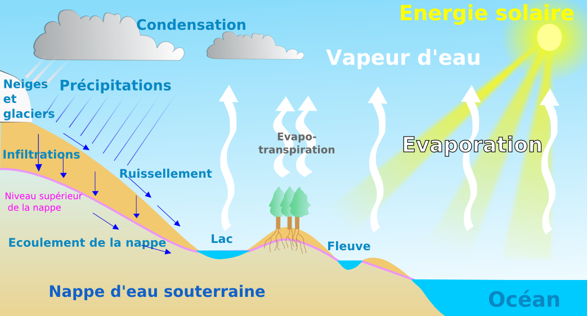
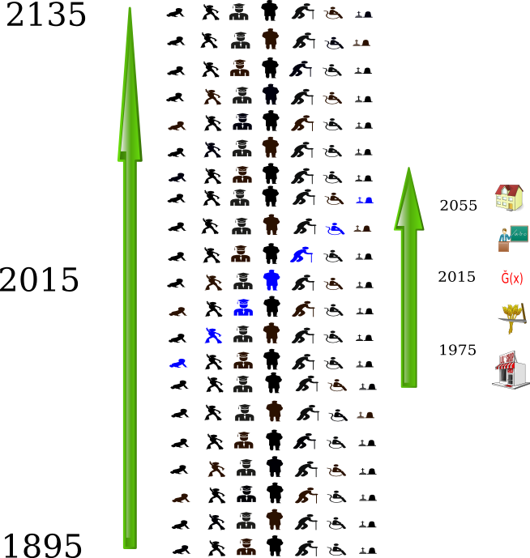
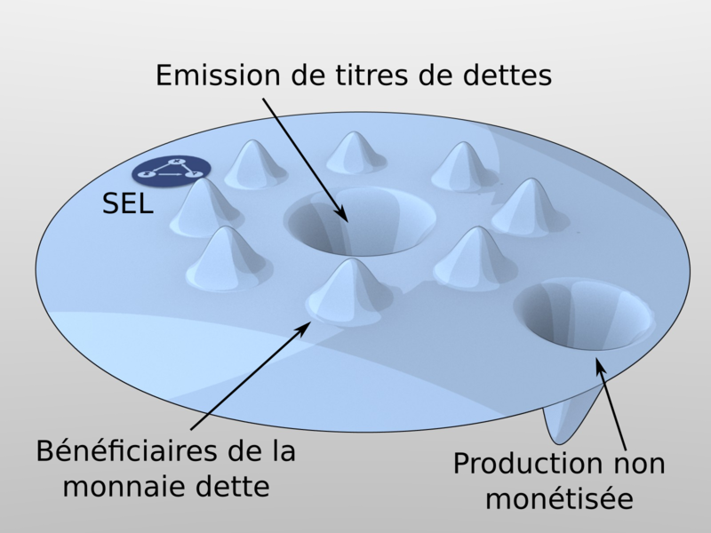
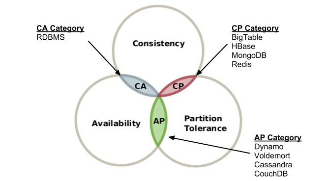

- Money’s just a means to meaning
A libre crypto currency
Quantitative Relative Theory of Money
- Spatial symmetry
- Temporal symmetry
- Relativistic Invariance
- Money is neutral... finally
Freedom
My definition
Freedom stops where other's freedom begins.
TRM's definition
Freedom is defined as a symmetrical principle: no nuisance to oneself and to others.
the economy, a cycle ?
|  |
…, like that ? |
Value field
- what’s meaning ?
- Breakfast : Specifications
- Lunch : From scratch implementation
- Starter : nœud miroir
- Main dish : Validation
- Cheesing grammars !
- Dessert : Block index à la RAM
- Dinner :
- OLAP buffet
- Chit Chat & Peering
Reading Specs
- Local validation - grammatical correctness
- Global validation (aka. Indexing)
- BMA - good old json webservice
- WebSocket, GraphQL, binaries
Implementing
Indexing
- Denormalization
- Simpler verification queries
- Push & Pop fork branches
- things you value
Machine with Entropy in a Demos of User as the Sociomimecry of Anarchy
- Law and freedom without force (anarchy)
- Law and force without freedom (despotism)
- Force without freedom and law (barbarism)
- Force with freedom and law (republic)
- what’s value?
IT History
- Turing machine
- Multitasking
- Parralelism
- Distributed
CAP ou PACap ?
A data issue